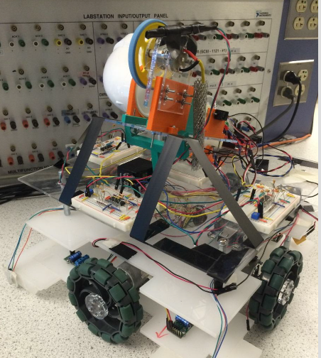
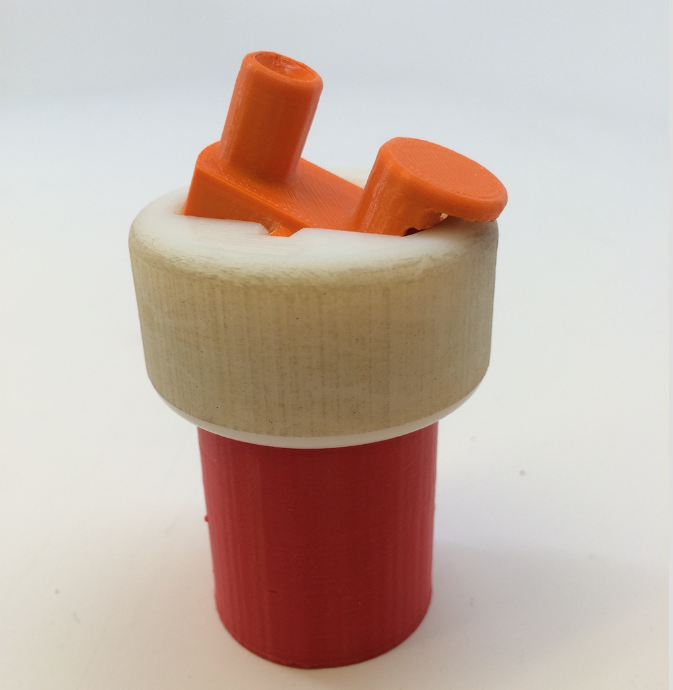

I am a Master Graduate in Mechanical engineering from University of Colorado at Boulder and now work at Tamaki Control as an Automation Engineer. At CU Boulder, I worked on designing a micro-stereolithography system to fabricate bio-compatible 3D structures. I received my Master of Science in ME and was supervised by Prof.Xiaobo Yin and Prof.Wei Tan. Before graduate school, I received my Bachelor degree in Astronautical Engineering at Beihang University in China.
My research interests include Soft Robotics, Electro-Mechanical System, Multiscale 3D printing. In particular, I am interested in developing biomimetic robots with intelligent material and algorithm.
[08/2018] Our paper about 3D printing with stiffness control has been accepted by Nature Communications.
[05/2018] Our Engineering team successfully completed the project to bridge yogurt production for Chobani.
[08/2017] I started my job at Tamaki Control as an automation process engineer.
[04/2017] I successfully defended my MS thesis titled "Fabrication of Tissue-Mimetic Environments Using Projection Stereolithography".
|  |
A self-driving, target-sensing ping-pong ball shooting robotHang Yin, Xuyue Shi, Yibo Yuan, Zikai Xu We designed a self-driving, target-sensing robot that can accurately launch pin-pong balls as a team of 4 people. The control for motion, sensing and lauching system is realized by Arduino and mbed k64f. Most parts of the robot are made from laser cut board and 3D printing.[video] |
||
|  |
PillOne DispenserSreyas Krishnan, Michael Lippert, Roshan Misra, Hang Yin We designed a feasible prototype for a medication dispenser for individuals with early stage motor skill disorders such as Parkinson’s disease and arthritis as a team of 4 people. Through multiple design iterations, extensive user testing, and feedback from individuals with motor control impairment a robust and functional prototype was conceived and built.[project] |